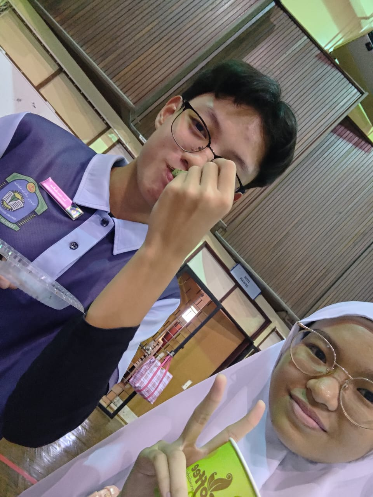
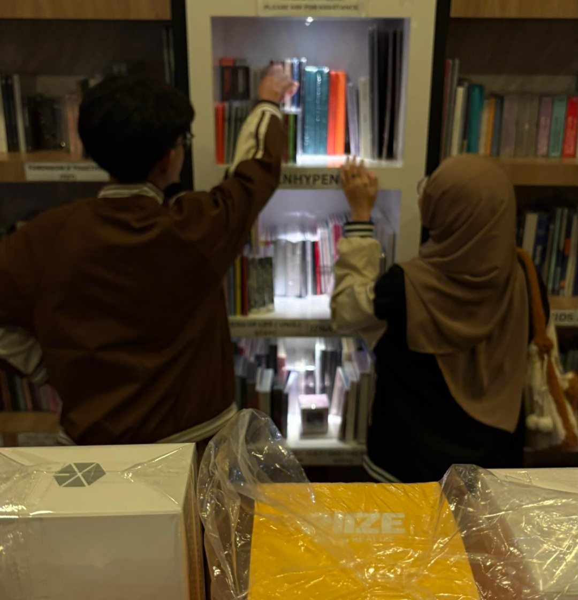
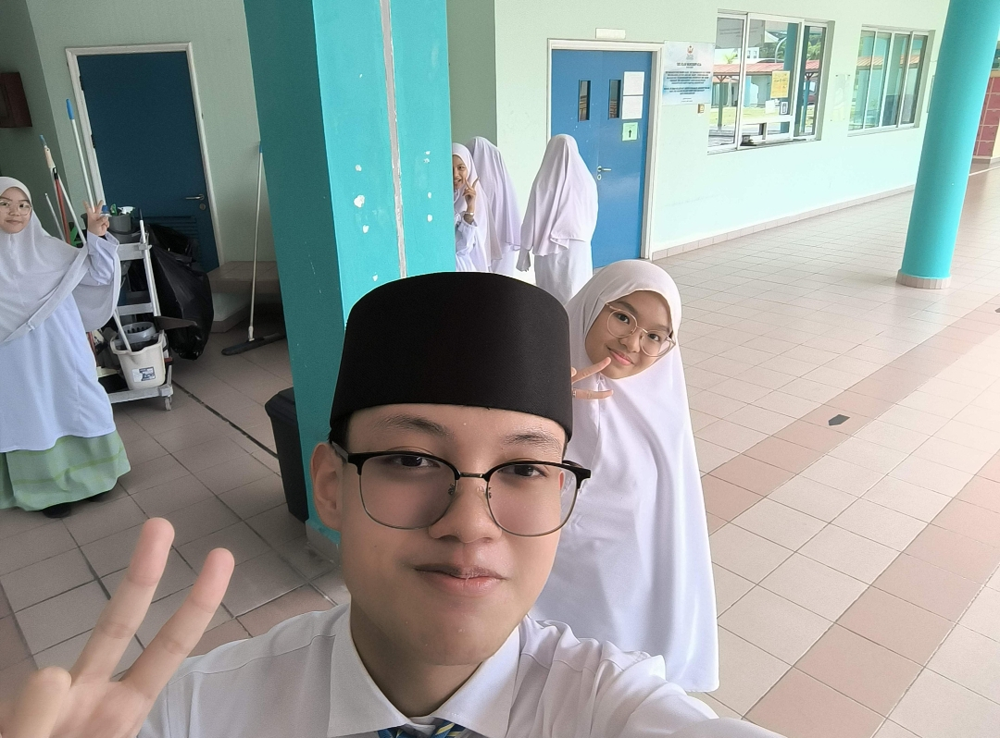
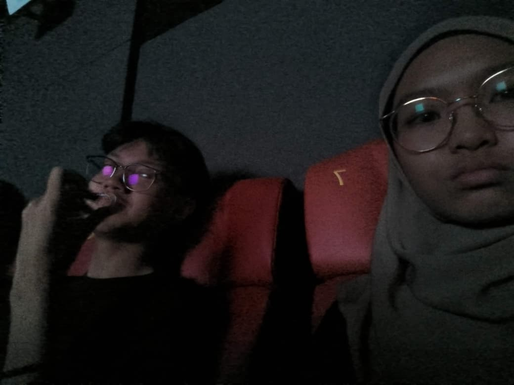
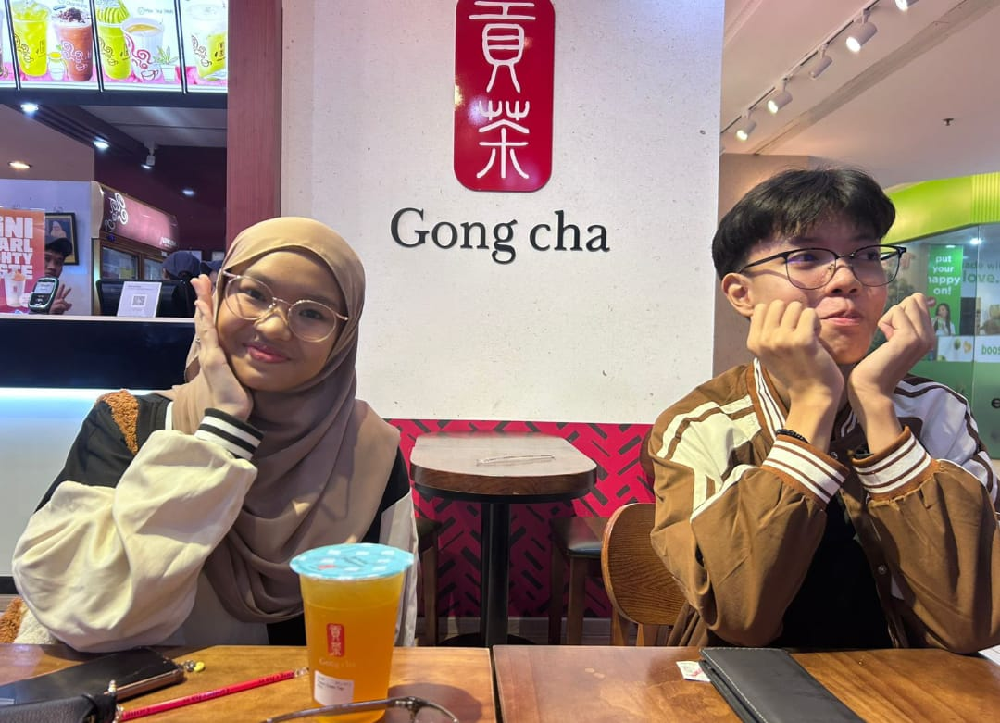
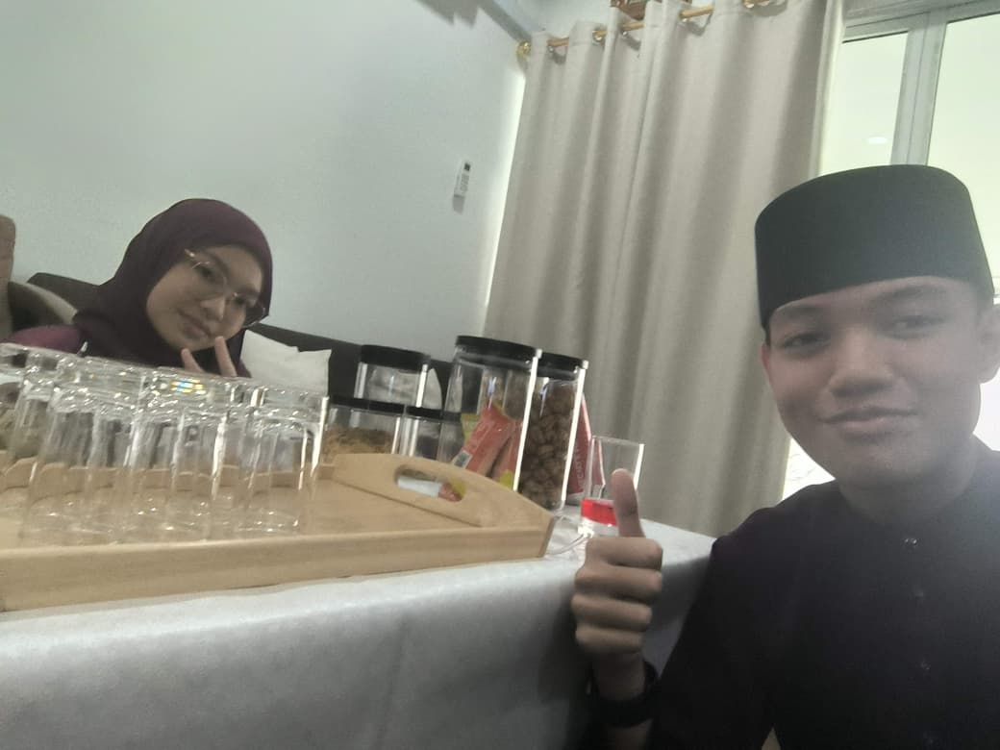

I made something special for you… a little garden of letters, memories, and all the things I never quite say out loud.
Each flower holds something meant only for you.
Every photograph holds a feeling that words can't quite capture.






But not the end of my appreciation for you.
Every day with you is a page in a story
I never want to stop reading.